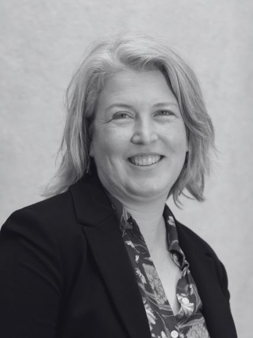

Bernhardt Lab
Aquatic–Terrestrial Biogeochemistry
People · linked from Emily Bernhardt's card

James B. Duke Distinguished Professor of Biogeochemistry, Department of Biology, Duke University (2004–2026); now Director of the Cornell Atkinson Center for Sustainability. Research interests: effects of global environmental change — urbanization, nitrogen deposition, excess fertilizer, rising CO2, emerging contaminants — on the biogeochemistry of rivers, wetlands, and watersheds.
On making space for joy in an academic career, with interviewers Christine Ogilvie Hendren and Matt Hotze.
The complete record — professional preparation, appointments, awards, and service.
In her own words
I grew up in Lenoir, a small town in western North Carolina, gaining a love of nature from frequent hikes in the Appalachian mountains and epic family vacations driving across the country to visit national parks and seashores in a bright orange Volkswagen pop top camper. By the time I started college at UNC Chapel Hill in 1992, I was convinced that I wanted to become an ecologist and I was particularly excited about wetlands biogeochemistry (though I had not yet learned that term) after reading John and Mildred Teal's Life and Death of a Salt Marsh during a family vacation of camping at Assateague Island National Seashore.
As an undergraduate at UNC I took every ecology course on offer and worked in the labs of nearly every ecology faculty. After counting tree seedlings in historic transects for plant ecologist Bob Peet, developing food web models with marine ecologist Pete Peterson, conducting an honors thesis on riparian buffer effectiveness with stream ecologist Seth Reice, and spending a formative summer as an REU student at the University of Michigan Biological Station working on stream food webs with stream ecologist Jan Stevenson, I was definitely hooked on a career in ecological research.
I was lucky to be awarded an NSF Graduate Research Fellowship, which helped get me accepted into a truly wonderful graduate position at Cornell University, where I was coadvised by aquatic ecologist Bobbi Peckarsky and biogeochemist Gene Likens, who was then the Director of the Institute of Ecosystem Studies. I conducted my dissertation research at the Hubbard Brook Experimental Forest, where I focused on the role of headwater streams in modifying watershed export of nutrients. During my graduate career I also took advantage of opportunities to travel to Venezuela and Chile to conduct research in collaboration with Alex Flecker and Doris Soto, and to spend time learning all about mayflies in Bobbi's Rocky Mountain Biological Laboratory streams. In my final year of graduate school I met Bill Schlesinger when he stopped by my poster at an ESA meeting, and following our conversation about nitrogen biogeochemistry in streams, Bill offered me a postdoctoral position to study nitrogen cycling in forest soils.
I became a postdoc working on the Duke Free Air Carbon Dioxide Enrichment (FACE) project in August of 2001. While a postdoc at Duke, I also had the opportunity to teach Biogeochemistry with Bill Schlesinger for the first time (a daunting challenge). In 2002, I took advantage of an exciting opportunity to return to aquatic systems by joining Margaret Palmer and Dave Allan in organizing the National River Restoration Science Synthesis, a large group of river scientists from across the country brought together with funds from NSF's National Center for Ecological Analysis and Synthesis Center (NCEAS). While working in Margaret Palmer's lab at the University of Maryland, I had the opportunity to help Margaret organize the Ecological Society of America's Visions project, aimed at formulating the future priorities for ecological science in the 21st century.
In 2003 I was offered the chance to return to Duke as a faculty member, being hired to fill Bill Schlesinger's line as a biogeochemist in Duke's Department of Biology, vacated when he became the dean of Duke's Nicholas School. I joined the department in 2004 along with my husband (and fellow ecologist) Justin Wright. In my two decades at Duke I had the great good fortune to recruit a series of incredibly talented students, postdocs, and research technicians who have joined me in building and sustaining a productive and stimulating research group. Together we developed exciting research programs on topics as diverse as soil priming, nanomaterial toxicity, ecosystem development, wetland restoration, stream restoration, urban thermal and chemical pollution, saltwater incursion, watershed nitrogen cycling, stream metabolism, the impacts of coal and gold mining, and the role of stream bryophytes.
In 2025 I was approached about an exciting opportunity to lead Cornell's Atkinson Center for Sustainability, and decided that this was a career change worth exploring. Throughout the interview process I became increasingly convinced that leading the Atkinson would play to my strengths — my love of convening people to solve real world problems, my enthusiasm for interdisciplinary research and for working directly with the people who own, manage and regulate land and water, and my hope to use my career to have a positive impact on the way we care for our planet. I feel very fortunate that the search committee and my new Cornell colleagues agreed that this was a good fit. I joined the faculty of the Ashley School of Global Development and the Environment and became the Director of the Atkinson Center for Sustainability in September of 2026. Along with the move, Justin Wright and I decided to combine forces and resources and build a shared lab.
— Emily Bernhardt
Curriculum vitae
Curriculum vitae
Note for the rebuild: the 2026 end dates above and the new Cornell appointment are inferred from the lab's move to Cornell — worth Emily double-checking exact title and dates for the official page.
Curriculum vitae
Curriculum vitae
Back to the People page to meet the rest of the lab.